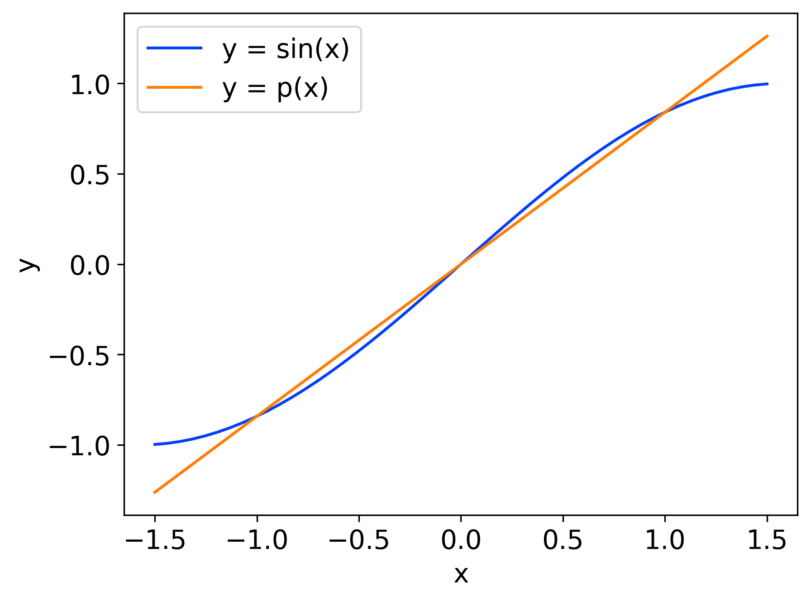
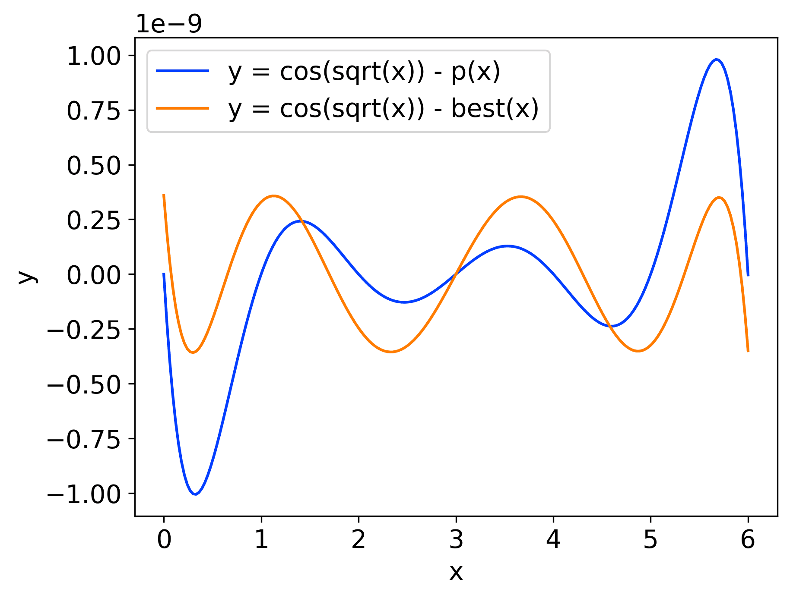

There is a self-sustaining cycle in the development of computer processors. Computers are exceptionally fast at doing Linear Algebra, which means that the fastest way to solve many problems is to rewrite them as Linear Algebra. As a result, when new processors and supercomputers are built, the performance metrics are largely "How fast can it do Linear Algebra?". This often means that when you want your computer to do something fast, you'd best do it with Linear Algebra.
Some examples of this:By the end of this first page, you will be able to find a polynomial that passes through a given set of points. I do this a lot in my work, I'll take a function like sin(x) and find a polynomial that approximates it, because polynomials are much nicer to work with. My ApproxTools repository is designed for doing this task quickly, but there is also ChebFun which is much more feature-rich.
2x + 3y = 5 3x + 2y = 5What makes an equation linear? It's the fact our variables only get multiplied by constants. If there were squaring, or multiplying variables together, or applying trigonometric functions, it wouldn't be linear. We now want to manipulate these two equations to find the solution, but what are the valid ways to manipulate it?
Firstly, we can write the equations in any order we like. This clearly does not change the answer.
Secondly, we can multiply an equation by any number except 0. If we multiply by 0, the equation becomes 0 = 0, which is always true and tells us nothing about x and y. This lets us rewrite the equations with the coefficient of x as 1, like this:
3 5
x + ╶─╴y =╶─╴
2 2
2 5
x + ╶─╴y =╶─╴
3 3
In general, we can apply any operation to both sides of an equation and get a new correct equation. Since both sides are equal, the result of the operation on both sides must be equal.
For linear equations, we want to always keep things linear, so the final manipulation is the adding of one equation to another. This means the two left hand sides (LHSs) add together to give a new LHS, and the two right hand sides (RHSs) add together to give a new RHS. We can take a shortcut, and combine the second and third manipulations, allowing us to add a (possibly negative) multiple of one equation to another.
Let us subtract our second equation from our first equation:
3 5
x + ╶─╴y =╶─╴
2 2
5 5
╶─╴y = ╶─╴
6 6
Now our system is as good as solved. Rescale the second equation to get y = 1, and then substitute that into the first equation to get x = 1 too. This technique is called back-substitution.
Simple enough. There are other manipulations, such as moving adding/subtracting terms to move them from the LHS to the RHS, or when we used substitution to find x using y, but this is never strictly necessary, despite being a common method taught. It is useful for the following proof though.
As a general rule, a system of n variables needs n equations to be solved. To show this, you can manipulate the first equation to
x = ay + bz + ... ,writing x in terms of the other variables. You can substitute that into all the other equations, so now x doesn't appear in any of them. You can repeat this for every variable, using one equation to eliminate one variable. At the end, only one variable remains, and its value is obvious from the remaining equation. Back-substitution then solves the rest of the system.
As systems gets larger, with more equations and variables, it becomes useful to be more systematic in our approach. This is where matrices come in. Only the coefficients in our equations really matter, the rest is redundant information so long as we always write our variables in the same order. We can therefore compile all the coefficients into a 2D grid called a matrix, like follows:
A = ⎛ 2 3 5 ⎞
⎝ 3 2 5 ⎠
Matrices are typically labelled with capital letters in bold font, or a double underline when handwriting. It is also common to draw a bar between the LHS and RHS, called the augmented form, like this:
A = ⎛ 2 3 | 5 ⎞
⎝ 3 2 | 5 ⎠
The matrix A contains all the information of our original system of equations. Applied to a matrix, our three valid ways of manipulating equations are row swapping, row scaling, and adding one row to another.
I will now explain the general algorithm for solving linear systems called Gaussian Elimination. For now, I will assume there's the same number of variables as equations. The algorithm can be modified for other amounts of equations, but I want to keep it simple for now.
That's a lot of steps, but they aren't that tricky, which is why computers are very well suited to Linear Algebra calculations. I have provided Python code that performs Gaussian Elimination. This code also contains the later examples
For now, let's solve a three variable system by hand with Gaussian Elimination
A = ⎛ 1 2 1 | 4 ⎞
| 2 5 2 | 9 |
⎝ 1 4 7 | 6 ⎠
|
This augmented matrix represents our system. The first row doesn't have a 0, so we can skip to step 3. |
⎛ 1 2 1 | 4 ⎞ | 0 1 0 | 1 | ⎝ 0 2 6 | 2 ⎠ |
We add -2 times row 1 to row 2, and -1 times row 1 to row 3, to give us 0s. |
⎛ 1 2 1 | 4 ⎞ | 0 1 0 | 1 | ⎝ 0 0 6 | 0 ⎠ |
Step 4 sets n = 2, and again we can skip to step 3. We add -2 times row 2 to row 3 |
⎛ 1 2 1 | 4 ⎞ | 0 1 0 | 1 | ⎝ 0 0 1 | 0 ⎠ |
Step 4 sets n = 3, and we've reached the bottom, so we move to step 6. We scale row 3 so the 3'rd entry is 1. |
⎛ 1 2 0 | 4 ⎞ | 0 1 0 | 1 | ⎝ 0 0 1 | 0 ⎠ |
For step 7, we add 0 times row 3 to row 2, and -1 times row 3 to row 1. |
⎛ 1 0 0 | 2 ⎞ | 0 1 0 | 1 | ⎝ 0 0 1 | 0 ⎠ |
Step 8 sets n = 2, and the entry is already 1 so we can move to step 7. we add -2 times row 2 to row 1. |
⎛ 1 0 0 | 2 ⎞ | 0 1 0 | 1 | ⎝ 0 0 1 | 0 ⎠ |
We're done! x = 2, y = 1 and z = 0 is the solution to our original system. |
Now for polynomial fitting. This may seem complicated, but it really does just boil down to simultanous linear equations. Let's take a quadratic function for now:
p(x) = ax²+bx+c
This may look non-linear, but a, b and c are our unknown variables, and it is perfectly linear in those. Let's say we want p(x) = sin(x) when x = -1, 0 and 1. This gives the equations:
p(-1) = a - b + c = sin(-1) = -sin(1) p(0) = c = sin(0) = 0 p(1) = a + b + c = sin(1)
This is easy to solve even without Gaussian Elimination. We have c = 0 immediately, add the two equations to see that a = 0, and then b = sin(1) follows.
Here's what our function looks like compared to sin(x) between x=-1 and x=1:

It is possible to do slightly better, go see the page on Approximation Theory once it exists.
For a more interesting example, let's now fit a degree-6 polynomial to the function cos(√x) at x=0,1,2,3,4,5,6
I'll only write out one equation, the full matrix, and the solution. Beyond 3x3, you should really rely on a computer for these calculations.
p(x) = ax⁶+bx⁵+cx⁴+dx³+ex²+fx+g p(2) = 64a + 32b + 16c + 8d + 4e + 2f + g = cos(√2)The full matrix is
array([[ 0, 0, 0, 0, 0, 0, 1, cos(0) ],
[ 1, 1, 1, 1, 1, 1, 1, cos(1) ],
[ 64, 32, 16, 8, 4, 2, 1, cos(√2)],
[ 729, 243, 81, 27, 9, 3, 1, cos(√3)],
[ 4096, 1024, 256, 64, 16, 4, 1, cos(2) ],
[15625, 3125, 625, 125, 25, 5, 1, cos(√5)],
[46656, 7776, 1296, 216, 36, 6, 1, cos(√6)]])
and was (mostly) generated by the np.vander function in Python. Matrices following this pattern are called Vandermonde matrices, which is why the function is called that. The solution is then:
a = 1.85909939e-09 b = -2.73701336e-07 c = 2.47937915e-05 d = -1.38887175e-03 e = 4.16666481e-02 f = -4.99999992e-01 g = 1.00000000e+00
If I drew the graph of this p(x) against the original function, it'd be indistiguishable. Instead, I've plotted the difference between them. I've also plotted the best possible polynomial for comparison, which is found by choosing better sampling points. Bad sampling points can break the fit entirely.
